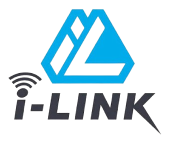
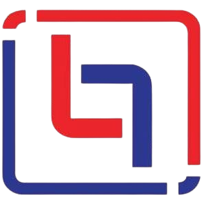

Routing & Switching
BGP, OSPF, EIGRP, Static Routing, PBR, VLAN, FHRP, STP, EtherChannel and vPC.
Building reliable, scalable network infrastructure — from ISP backbone and broadband access to enterprise connectivity and automation.

BGP, OSPF, EIGRP, Static Routing, PBR, VLAN, FHRP, STP, EtherChannel and vPC.
IGW, BNG, PPPoE, CGNAT, RADIUS, NAT and traffic engineering.
GPON, OLT/ONU, FTTx deployment, migrations and compatibility testing.
ACLs, GRE/IPsec VPN, Packet Analysis, Wireshark and incident troubleshooting.
Python, Zabbix, Libre, EVE-NG, Fiberhome UNM2000, Huawei iMaster NCE and ZTE NetNumen U31.
Technical reporting, training, stakeholder coordination and deployment planning.


I-Link · Migrated 4,500+ PPPoE subscribers to dual hardware BNG routers.
Addressed peak-hour CPU bottlenecks by transitioning subscriber sessions onto redundant hardware BNG routers with RADIUS high availability.
Conceptual illustration — not the production topology.
i-Link · New PoP site deployment with Backbone Router and dual GPON OLTs.
Installed a Backbone Router connected to the Main Office via redundant dual uplinks, integrated with two GPON OLTs to expand broadband coverage across the Downtown area.
Conceptual illustration — not the production topology.
INDEX CO., LTD. · GeNew OLT/ONU deployment and migration project.
October 2025 – Present (project affiliation as listed). GeNew OLT testing, NMS infrastructure setup, OLT/ONU migrations, documentation, training, and post-migration support.
i-Link · Full campus network infrastructure deployment.
Designed and deployed campus-wide connectivity using TP-Link Omada gateways, managed switches, cloud controllers, and high-density wireless APs.
i-Link · Commercial routing and wireless deployment.
Configured gateway routing, VLAN segmentation, and seamless wireless access point coverage for facility operations and guest connectivity.
Global Net · Ruijie enterprise campus network rollout.
Implemented Ruijie enterprise gateways, distribution switches, and campus-wide wireless access points for academic and administrative buildings.
Global Net · Showroom gateway and Wi-Fi setup.
Deployed TP-Link enterprise routers and wireless access points to support showroom operations, CCTV, and customer Wi-Fi.
ACH Network Professional · CCNP multi-site capstone lab.
Simulated two redundant ISP backbones interconnected with two multi-branch enterprise networks utilizing BGP, OSPF, and GRE over IPsec VPN tunnels.
Technologies listed in my engineering experience and training.
Enterprise Core : Advanced Routing & Switching Architecture.
Multi Vendors fundamental networking and infrastructure deployment.
Radius, Broadband Network Gateway ,OLT/ONU configuration.
Core routing, switching and foundational networking.
Advanced network theory and configuration.
Programming fundamentals and logic development.
Fundamental networking and hardware administration.
Hardware diagnostics, assembly and system maintenance.
Available for ISP core architecture discussions, network engineering consultations, and infrastructure projects in Yangon.